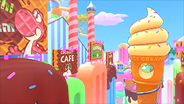

半重力地帯で高い位置から地面にぶつかると埋まります。原理は不明です。特定のアイテムを使うことで抜け出すことができます。
This glitch causes your tires to become stuck in the ground in low-gravity areas, preventing movement. The exact cause is not yet well understood. You can use a certain item to escape.
| ICON | NAME | DIFFICULTY | SPOTS |
|---|---|---|---|
| Rainbow Road | ★★★★ | 1 | |
 |
Sky-High Sundae | ★★★★★ | 2 |